Air Quality Monitor V3
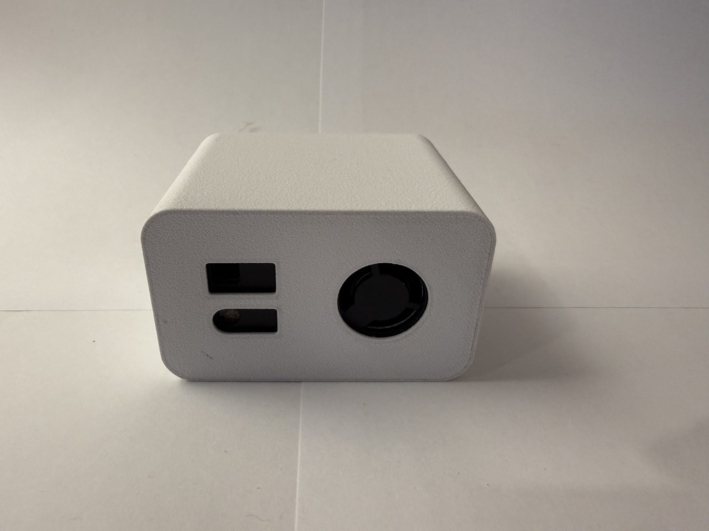
Overview
Generation 3 is what happens when a year of data tells you exactly which measurements you actually use. The SEN66 folds everything I needed two separate sensors for in Generation 2 into a single module: particulate matter, VOC and NOx indices, temperature, humidity, and now a true CO2 measurement built right in. The entire bill of materials collapsed down to two line items — one sensor and one microcontroller.
It did not just get simpler, it got faster. The update interval on this one is set to 15 seconds, so the readings come in quick enough to watch things happen in real time — open a window, cook dinner, or run the vacuum and the effect shows up in Home Assistant within seconds. I also skipped the adapter breakout this time around and soldered the SEN66's wires straight to the XIAO, which knocked another line item off the BOM and made the whole package that much smaller. This is the build that has been running day in and day out for well over a year now.
Components
SEN66
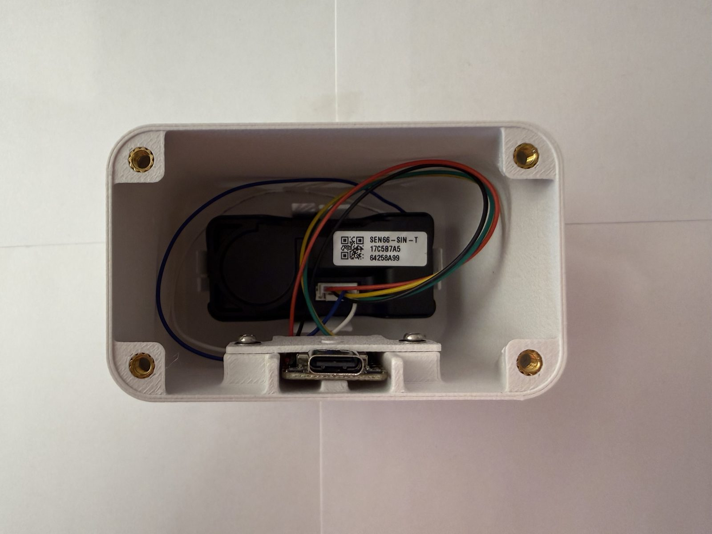
The SEN66 is the all-in-one evolution of the SEN5x line. Everything the SEN55 does — PM1.0, PM2.5, PM4, PM10, VOC, NOx, temperature, and humidity — plus an integrated CO2 sensor in the same package. The SEN6x datasheet carries over the same claims as the SEN5x family: ±10% on the particulate mass concentrations, ±0.45 °C on temperature, ±4.5 %RH on humidity, a ten year plus lifetime, and the added CO2 measurement is rated at ±(30 ppm + 3% of the reading). No breakout boards, no sensor daisy chaining, no second I2C address to keep track of. One sensor, four wires, done.
Just like with the SEN55, I leaned on the SEN6x datasheet and the official STEP file to work out the mounting orientation and design the enclosure around the exact outline of the module.
Seeed Studio XIAO ESP32-C6
The same five dollar XIAO ESP32-C6 from Generation 2 carries over unchanged. It has more than enough horsepower for a 15 second sensor loop, and keeping the microcontroller identical between generations meant the firmware and the tooling carried over too.
Programming
The firmware is ESPHome again, and it is even shorter this time. The sen6x platform with the SEN66 type declares every channel the sensor offers in one block — PM, NOx, CO2, temperature, humidity, and VOC — and the update interval is set to 15 seconds. The XIAO's i2c bus, the Home Assistant API, over-the-air updates, and the captive portal fallback are all straight from the same configuration pattern as Generation 2.
Case Design
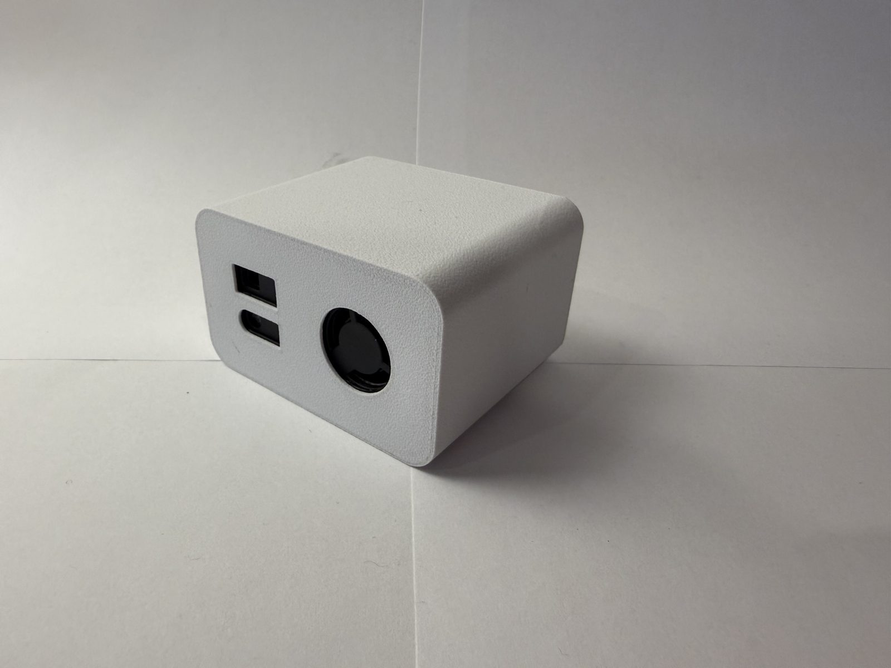
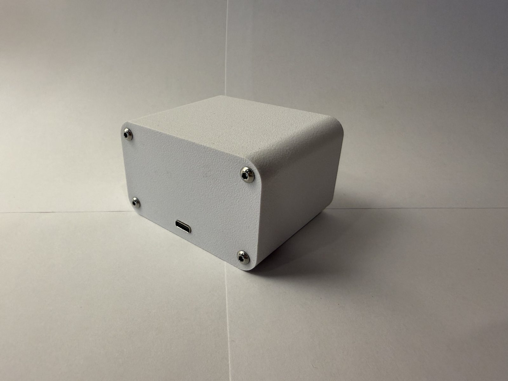
The Generation 3 case is the simplest of the three. With only one sensor and one board inside, the enclosure reduces to a body with a small retainer that pins the XIAO in place, held together with heat-set inserts and M3 hardware — and at roughly 75 x 46 x 61 mm, it is considerably more compact than the Generation 2 box, since a single integrated sensor leaves far less to house. The case does not need the vent holes the earlier generation relied on either, because everything is housed inside the SEN66 module itself. The model files are available below, viewable in 3D right in the browser:
Initial Data
When the SEN66 first went online, I put together an initial data report with the first readings, 3D renders of the enclosure, and photos of the finished build. A few pages from that report are below, and the full document is available as a PDF:
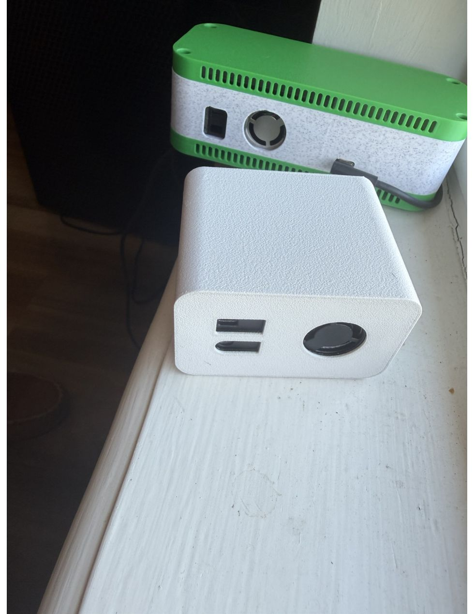
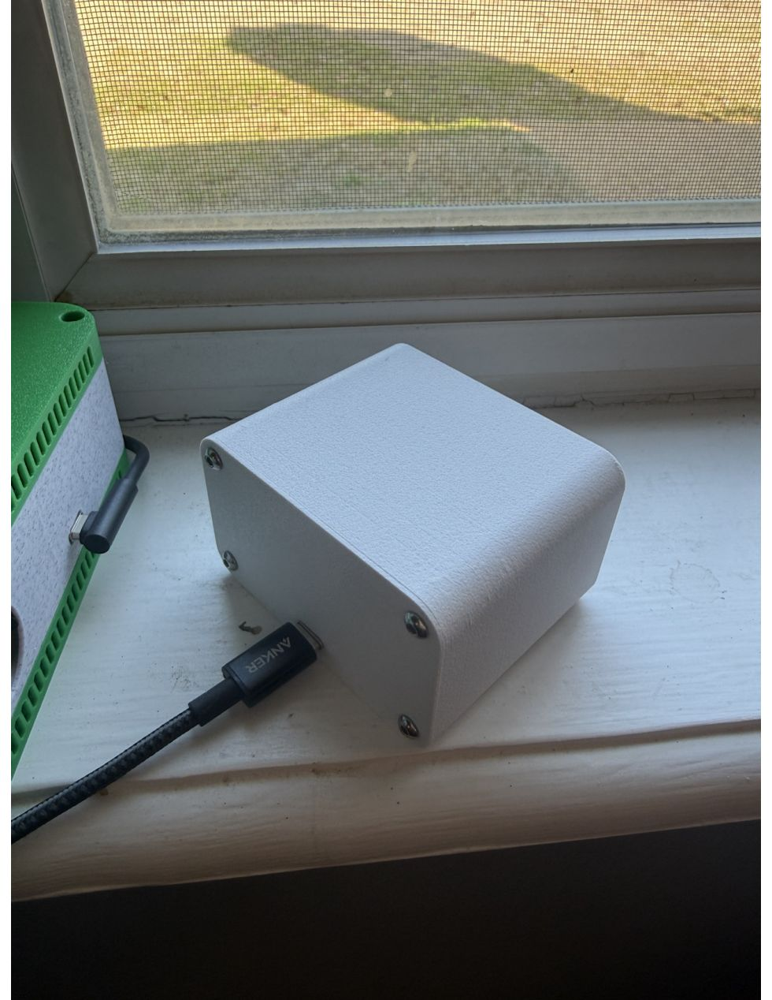
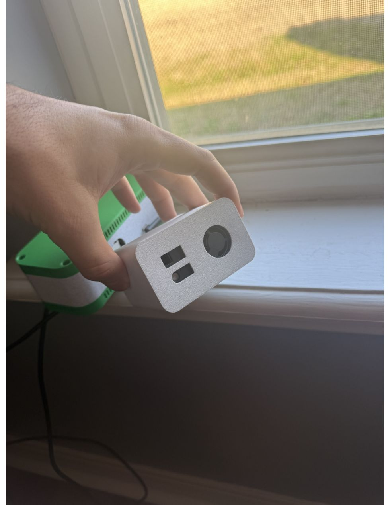
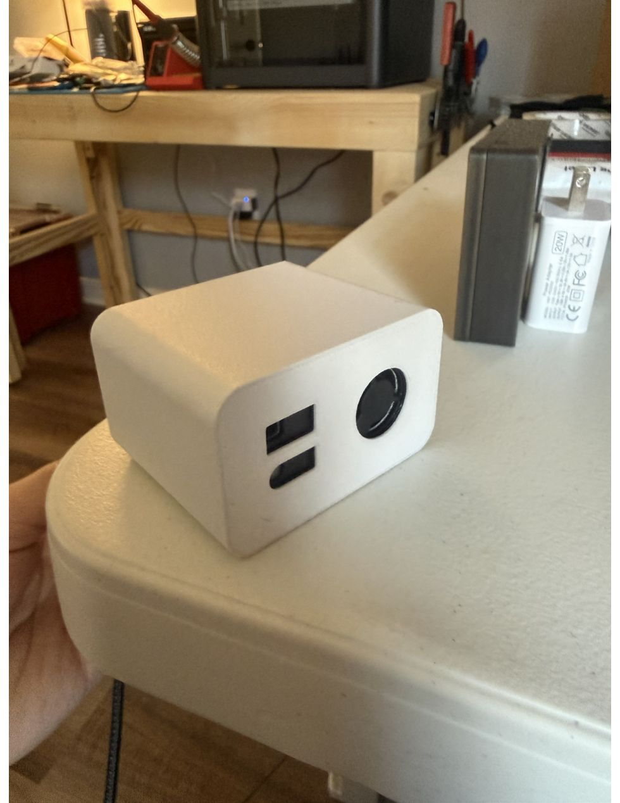
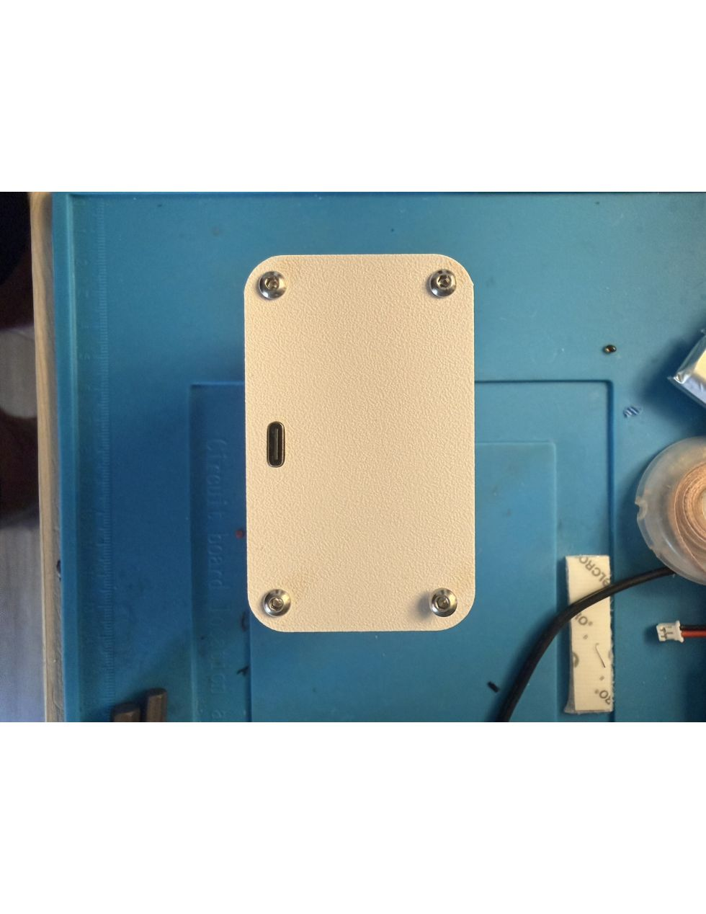
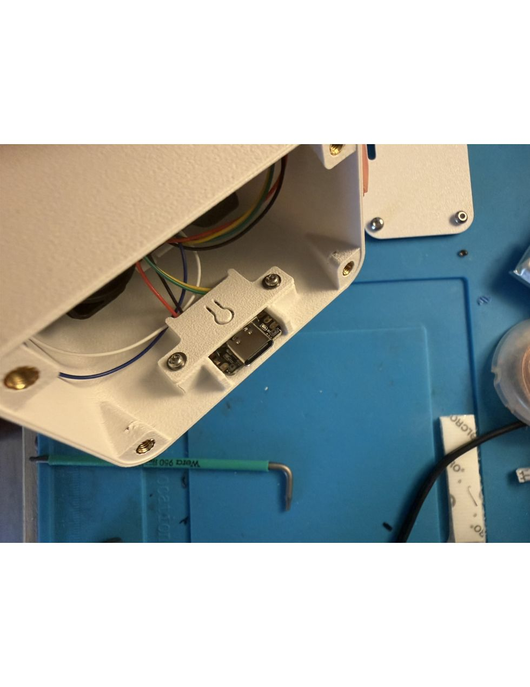
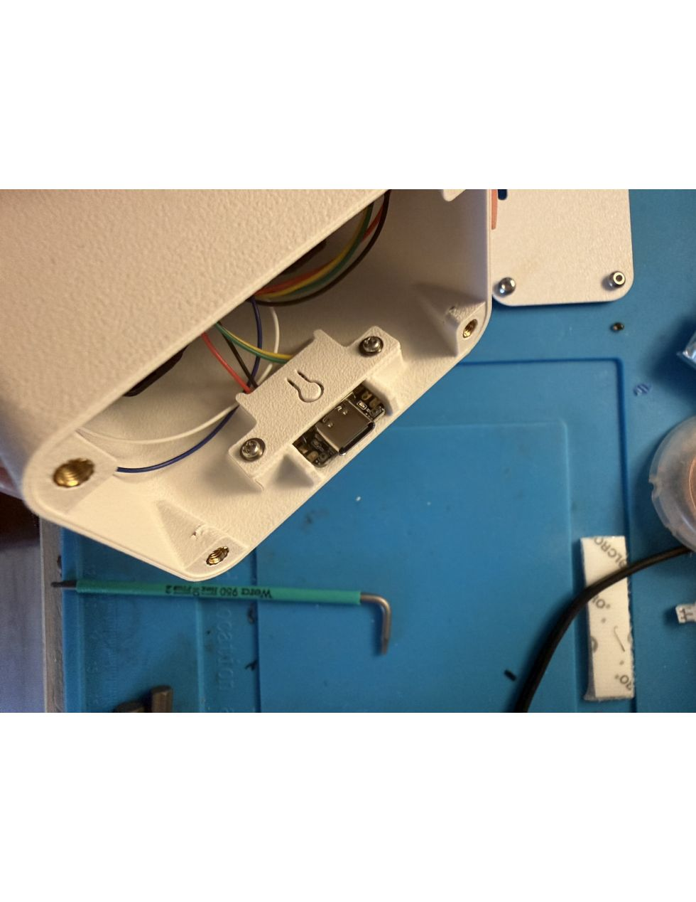
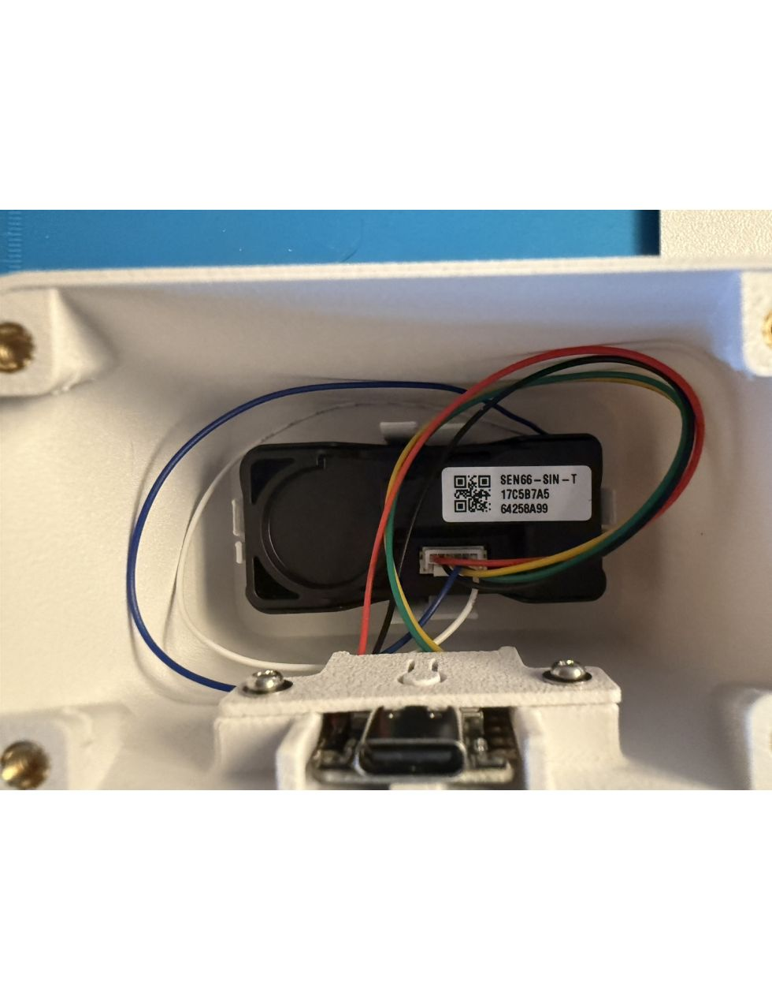
Download the full report (PDF)
Bill of Materials
| Name | Description | Quantity | Price |
|---|---|---|---|
| SEN66-SIN-T | All-in-one air quality sensor with I2C output from Sensirion | 1 | $59.00 |
| Seeed Studio XIAO ESP32-C6 | Microcontroller | 1 | $5.00 |
| $64.00 | |||